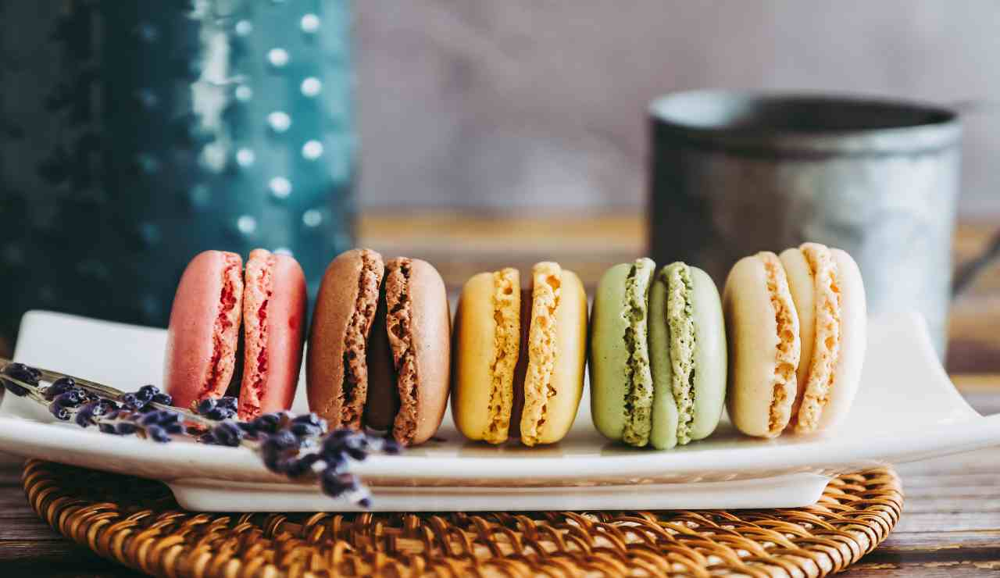

MACARONS

Macarons are the most famous pastries of French confectionery production. These are colored biscuits, prepared
with egg white and almond flour, stuffed with a ganache, a cream with cream and butter, flavored in
many different ways. Beautiful to look at and even better to taste, macarons are a real challenge if you love
pastry.
Preparing them at home can be difficult, but following our recipe step by step, you will succeed. Just follow
each step carefully, paying attention to the resting times of the wafers and the temperature of the sugar that
is used to whip the dough.
INGREDIENTS
For the macarons'shell
- 1 cup almond flour(95 g), finely ground
- 1 ¾ cups powdered sugar(210 g)
- 3 egg whites, at room temperature
- ¼ cup granulated sugar(50 g)
- 1 teaspoon salt, divided
- ½ teaspoon vanilla extract
- 2 drops pink gel food coloring
For the ganache (vanilla buttercream)
- 3 tablespoons of fresh cream
- 3 cups powdered sugar(360 g)
- 1 cup unsalted butter(230 g),
2 sticks, at room temperature
- the seeds of a vanilla bean or
1 teaspoon vanilla extract
PREPARATION
- Make the macarons: In the bowl of a food processor, combine the powdered sugar, almond flour, and ½ teaspoon of salt, and process on low speed, until extra fine. Sift the almond flour mixture through a fine-mesh sieve into a large bowl.
- In a separate large bowl, beat the egg whites and the remaining ½ teaspoon of salt with an electric hand mixer until soft peaks form. Gradually add the granulated sugar until fully incorporated. Continue to beat until stiff peaks form (you should be able to turn the bowl upside down without anything falling out).
- Add the vanilla and beat until incorporated. Add the food coloring and beat until just combined.
- Add about ⅓ of the sifted almond flour mixture at a time to the beaten egg whites and use a spatula to gently fold until combined. After the last addition of almond flour, continue to fold slowly until the batter falls into ribbons and you can make a figure 8 while holding the spatula up.
- Transfer the macaron batter into a piping bag fitted with a round tip.
- Place 4 dots of the batter in each corner of a rimmed baking sheet, and place a piece of parchment paper over it, using the batter to help adhere the parchment to the baking sheet.
- Pipe the macarons onto the parchment paper in 1½-inch (3-cm) circles, spacing at least 1-inch (2-cm) apart.
- Tap the baking sheet on a flat surface 5 times to release any air bubbles.
- Let the macarons sit at room temperature for 30 minutes to 1 hour, until dry to the touch.
- Preheat the oven to 300˚F (150˚C)
- Bake the macarons for 17 minutes, until the feet are well-risen and the macarons don’t stick to the parchment paper.
- Transfer the macarons to a wire rack to cool completely before filling.
- Make the buttercream: In a large bowl, add the butter and beat with a mixer for 1 minute until light and fluffy. Sift in the powdered sugar and beat until fully incorporated. Add the vanilla and beat to combine. Add the cream, 1 tablespoon at a time, and beat to combine, until desired consistency is reached.
- Transfer the buttercream to a piping bag fitted with a round tip.
- Add a dollop of buttercream to one macaron shell. Top it with another macaron shell to create a sandwich. Repeat with remaining macaron shells and buttercream.
- Place in an airtight container for 24 hours to “bloom”.
- Enjoy!